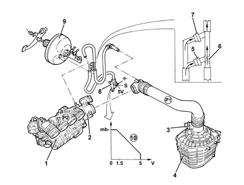

3330D brake vacuum system
- Path
- Descriptions > 33 BRAKING SYSTEM > 3330 HYDRAULIC BRAKING SYSTEM > 3330D brake vacuum system
- Kind
- system description
- Applies to
- all engines; all production periods
- Interactive page
- https://sloeber94.github.io/elrnDB-a156/en/#/3232921
Applies to: all engines; production: fino a 03/98, da 04/98 a 02/99, da 03/99 a 01/00, da 02/00 a 01/01, da 02/01 a 02/02
The additional chamber type Bosch 8" brake servo is built into the brake pump.
Applies to: engines: 2.0 JTS, 2.0 JTS; production: da 03/02 a 09/03, da 10/03
CONSTRUCTION FEATURES
On account of its operating specifications, in the following conditions, the engine on the 2.0 JTS version:
- after cold starting;
- whilst warming up;
- with the climate control working,
produces a minimal vacuum in the brake servo caused by the increased opening of the throttle.
DESCRIPTION
The brake servo vacuum circuit is equipped with a by-pass with two built-in one way valves (5) and (7) which operate through the differences in pressure (P1) and (P2) upstream and downstream of the throttle casing.
There is a restricter (6) for the pipe near the valve (5) to take advantage of the Venturi effect.
A servo brake minimum vacuum pressure sensor (8) is fitted on the brake servo (9) which notifies the engine management control unit of the vacuum in the brake servo.
OPERATING
With the engine cold or additional loads applied, the air passes through the by-pass and is in contact with the brake servo by means of the one-way valve (5) and the restricter increases the vacuum at which the air is removed from the brake servo.
With the engine warm and without additional loads, the vacuum in the intake manifold is equal to or more than -600 mb (ideal value) and the air in the brake servo is removed via valve (7).
If the brake pedal is pressed repeatedly and, in particular, if the throttle is open on account of other consumers, the vacuum in the brake servo may go down to below the level of -290 mb.
At this point, the brake servo minimum vacuum sensor (8) intervenes, sending an electrical signal to the engine management control unit. Having received the signal (1.5 - 5 Volt), the control unit processes it and transforms it into a physical vacuum value and intervenes by decativating:
- the air conditioning,
- the stratified engine operating mode,
therefore the vacuum in the brake servo increases guaranteeing assistance for at least three repeated presses of the brake pedal.
FAULT DIAGNOSIS
When the engine management control unit receives the signal it carries out the electrical fault diagnosis.
If an occasional error is detected, it intervenes by temporarily deactivating the air conditioning and the stratified engine operating mode.
If a validated error is detected (i.e. verified at least three times), caused by an open circuit or a battery/earth short circuit, it is switched OFF, i.e. the air conditioning and the stratified engine operating mode are definitively deactivated until the fault is repaired.

1 - Modular intake manifold 2 - Throttle casing 3 - Air flow meter 4 - Air cleaner 5 - One-way valve 6 - Restricter 7 - One-way valve 8 - Brake servo minimum vacuum sensor 9 - Brake servo 10 - Vacuum signal transformation graph